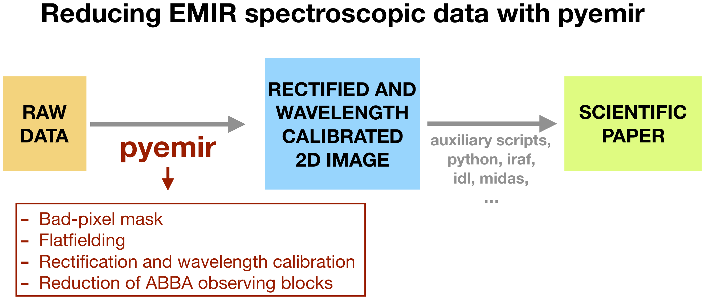
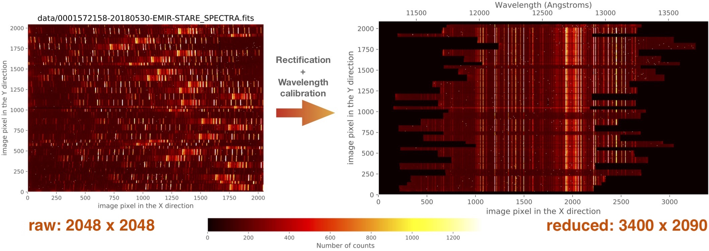

Spectroscopic mode tutorial: MOS data¶
This tutorial provides an easy introduction to the use of PyEmir (via Numina), focusing on the rectification and wavelength calibration of EMIR spectroscopic images.
For detailed documentation concerning the installation of PyEmir, see the pyemir_installation guide.
{kind=link}
As shown in the previous diagram, PyEmir helps to generate a rectified and wavelength calibrated 2D image. From this point, the astronomer can use her favourite software tools to proceed with the spectra extraction and analysis.
{kind=link}
The rectification and wavelength calibration of the original 2048x2048-size raw images generates reduced 3400x2090-size images. The spatial and spectral sampling of the raw images are preserved, as much as possible (to minimise resampling problems) in the reduced images, and the spectral direction axis is enlarged to acommodate the varying wavelength ranges covered by the slitlet spectra depending on the location of the slitlets on the plane defined by the CSU (Cold Slit Unit).
At present, PyEmir is able to work with raw images obtained with the following spectroscopic configurations:
Grism |
Filter |
Useful slitlets |
CRVAL1 |
CDELT1 |
NAXIS1 |
NAXIS2 |
|---|---|---|---|---|---|---|
HR J |
J |
2 - 54 |
11200 |
0.77 |
3400 |
2090 |
HR H |
H |
2 - 54 |
14500 |
1.22 |
3400 |
2090 |
HR K |
Ksp |
2 - 54 |
19100 |
1.73 |
3400 |
2090 |
LR |
YJ |
4 - 55 |
8900 |
3.56 |
1270 |
2090 |
LR |
HK |
4 - 55 |
14500 |
6.83 |
1435 |
2090 |
In the previous table, CRVAL1, CDELT1, NAXIS1 and NAXIS2
correspond to the values for the rectified and wavelength calibrated images.
We strongly recommend to follow the different sections of this tutorial in the provided order, starting with the simple handling of (pseudo) longslit data and then facing the proper reduction of MOS observations.
Tutorial index: